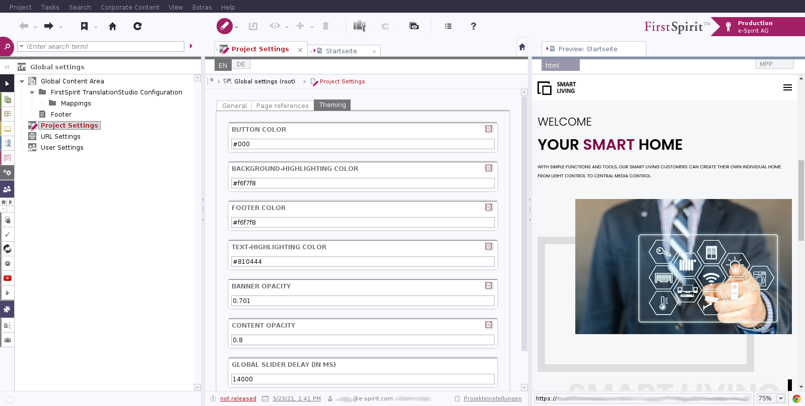
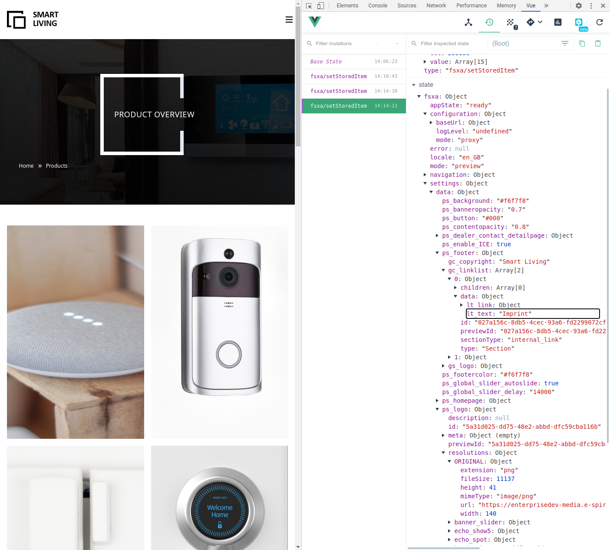

Project Properties
FirstSpirit provides a mechanism to configure global project settings in a specific area of the project data. In the FirstSpirit SiteArchitect this Global settings area is presented as the `gray' section found behind the cog wheels.

In the FSXA example project Smart Living Global a `Theming'' tab allows you to quickly modify project settings such as `button color, text highlighting color or banner opacity.
Reading a single value
When developing a PWA the global settings can be a accessed from any FSXABaseCompenent element via the globalSettings() attribute. This way reading the text highlight color value from the Smart Living Global project is as simple as doing:
import { FSXABaseAppLayout } from 'fsxa-pattern-library'
class AppLayout extends FSXABaseAppLayout {
render() {
<div>Color: {this.globalSettings?.data.ps_text_highlighting}</div>
)
}
}
export default AppLayoutThe key ps_text_highlighting is the input field name defined in Smart Living Global’s project settings template (UID: project_settings):
<CMS_INPUT_TEXT name="ps_text_highlighting" hFill="yes" singleLine="no" useLanguages="no">
<LANGINFOS>
<LANGINFO lang="*" label="Text-Highlighting color"/>
<LANGINFO lang="DE" label="Text-Highlighing Farbe"/>
</LANGINFOS>
</CMS_INPUT_TEXT>Reading a list of values
In Smart Living Global you see two links in each page’s footer:
Imprint Privacy Policy
Both are defined in the global settings (in both project languages), and stored via an FS_CATALOG input component.
Now the way we render all the links in Smart Living Global’s AppLayout component is by looping over the linklist with .map():
{this.globalSettings?.data.gc_linklist.map((link: any) => (
<nuxt-link
to={this.getUrlByPageId(link.data.lt_link.referenceId) || '#'}
class={`tw-text-xs hover:tw-underline`}
>
{link.data.lt_text}
</nuxt-link>
))}Finding out about available attributes
Provided you have the Vue Devtools installed, you can easily analize the settings object’s attributes from your web browser:

Further information
You can find further information on Global settings in the Online Documentation FirstSpirit.